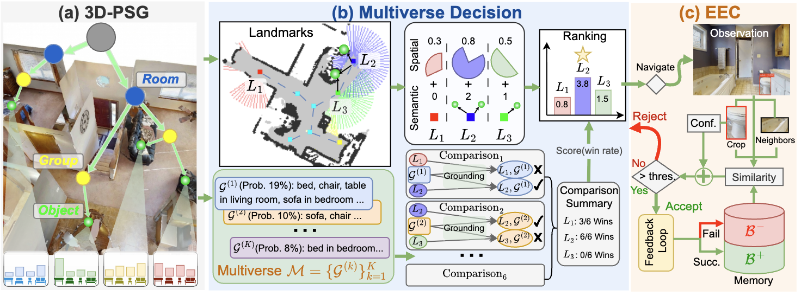
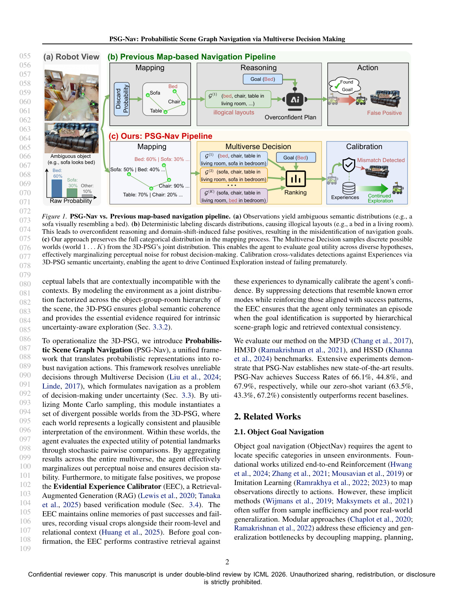
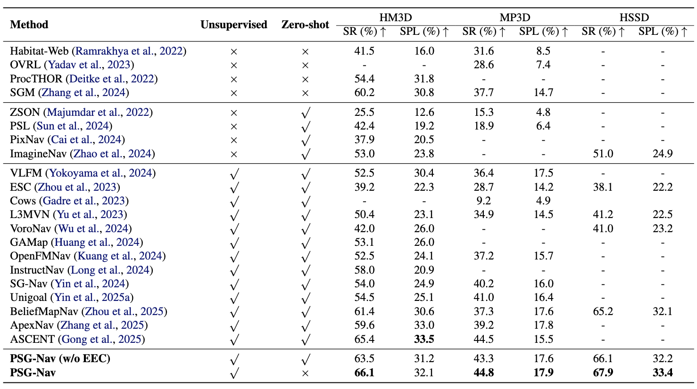
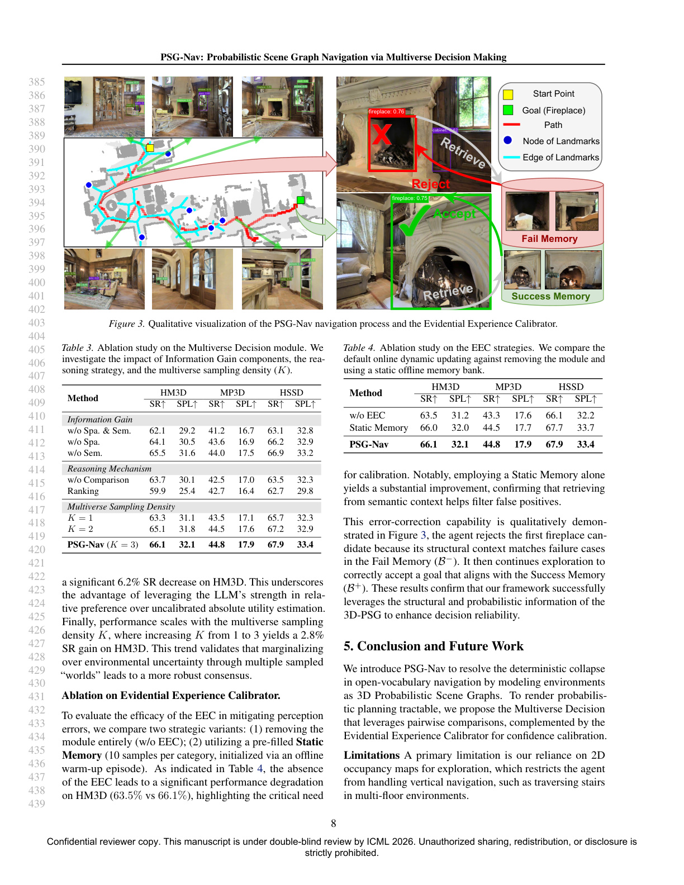
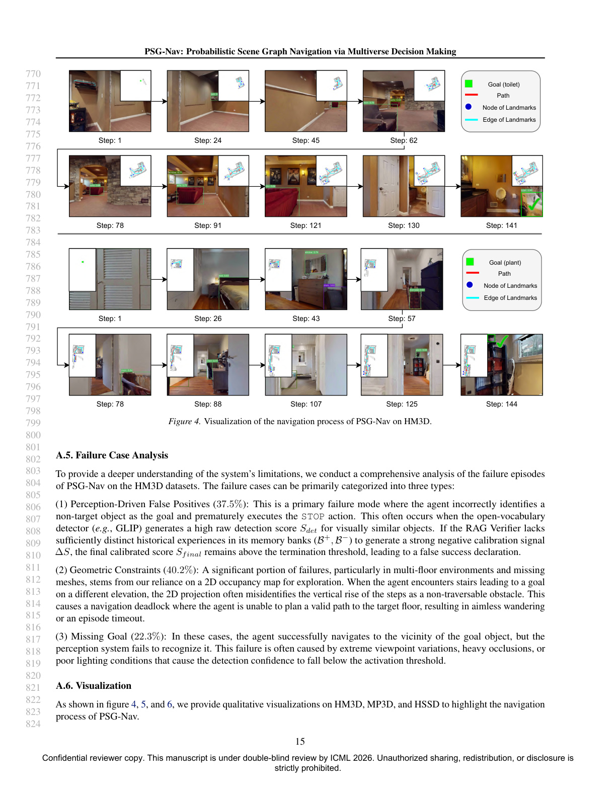
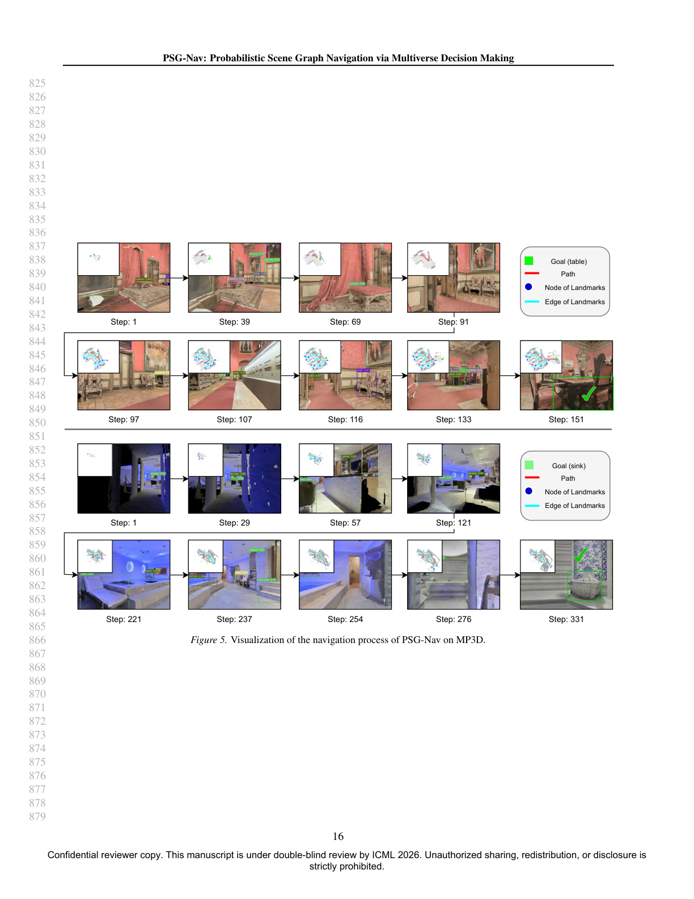
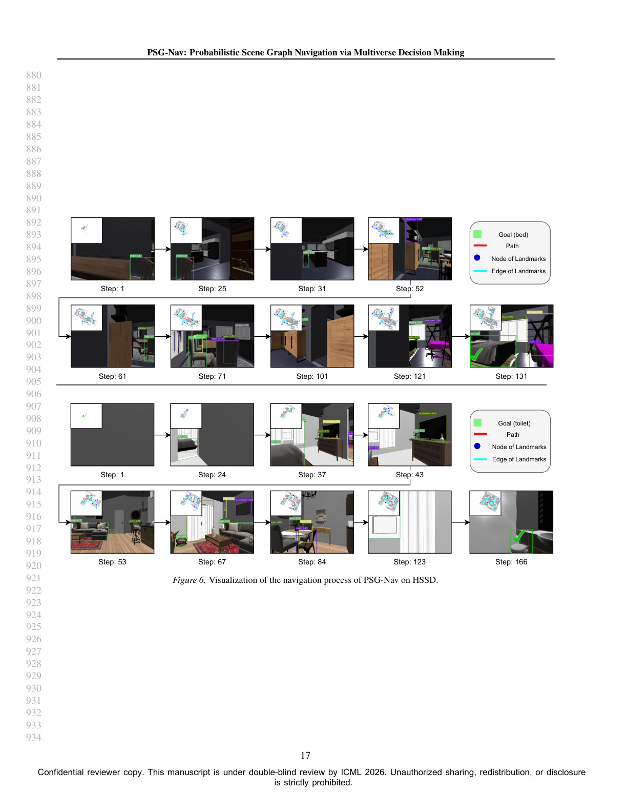
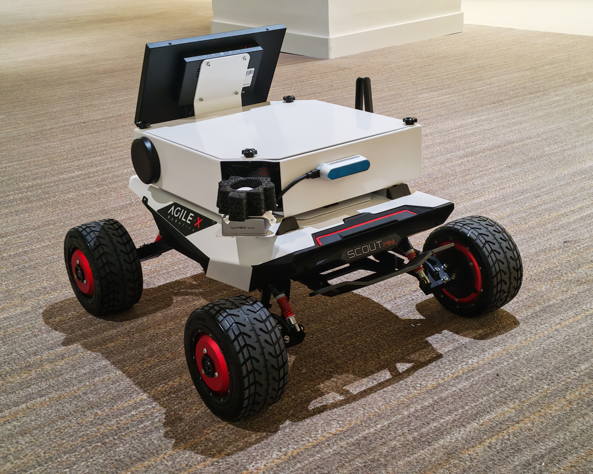

1The Hong Kong University of Science and Technology (Guangzhou) 2Jilin University
Open-vocabulary navigation requires embodied agents to manage significant perception uncertainty stemming from semantic ambiguity and model errors. However, most existing works settle for locally-optimal deterministic approaches, depriving complex navigation decision-making over multiple composite possibilities that are critical for globally better solutions.
We propose Probabilistic Scene Graph Navigation (PSG-Nav), which constructs a 3D Probabilistic Scene Graph that uses full semantic categorical distributions to account for perception uncertainty. To efficiently reason about optimal navigation landmarks, we propose Multiverse Decision to sample multiple most-likely world settings from the joint distribution, and evaluate landmarks based on compatibility between landmarks and multiverses.
To mitigate false positives due to epistemic uncertainty, we introduce the Evidential Experience Calibrator (EEC), which enables online lifelong adaptation by cross-validating detections against memories of past successes and failures. Extensive experiments on MP3D, HM3D, and HSSD demonstrate PSG-Nav achieves new state-of-the-art Success Rates of 66.1%, 44.8%, and 67.9%, respectively.
Full semantic categorical distributions over object classes, capturing perception uncertainty at every node.
Samples multiple most-likely world states; selects landmarks robust across all sampled worlds.
Online lifelong memory of past successes and failures to suppress false positive goal verification.
PSG-Nav consists of three key components: the 3D Probabilistic Scene Graph that models perception uncertainty via categorical node distributions; the Multiverse Decision module that samples plausible world states and selects the globally optimal landmark; and the Evidential Experience Calibrator (EEC) that maintains online evidential memory for false-positive suppression.


PSG-Nav is evaluated on three widely-used benchmarks: HM3D, MP3D, and HSSD, achieving new state-of-the-art on all three under Success Rate (SR) and SPL metrics.

Each component brings consistent gains: the Probabilistic Scene Graph, Multiverse Decision, and EEC are all critical to the final performance.

Navigation trajectories on HM3D, MP3D, and HSSD demonstrating PSG-Nav's ability to reason under uncertainty and reach the target.



The Evidential Experience Calibrator (EEC) cross-validates new detections against a memory of past successes and failures, effectively suppressing false positives during long-horizon exploration.
PSG-Nav on the HM3D-OVON benchmark, where targets are specified as open-vocabulary descriptions beyond standard category labels.
Our robotic platform is built upon an Agilex SCOUT MINI chassis with a RealSense D435 RGB-D camera, CH110 IMU, and dual Livox MID 360 LiDARs. All computation runs onboard via an NVIDIA Jetson AGX Xavier.

If you find our work useful, please consider citing:
@inproceedings{chen2026psgnav,
title = {PSG-Nav: Probabilistic Scene Graph Navigation via Multiverse Decision Making},
author = {Rufeng Chen and Yue Chang and Xiaqiang Tang and Hechang Chen and Sihong Xie},
booktitle = {Proceedings of the 43rd International Conference on Machine Learning (ICML)},
year = {2026},
url = {https://arxiv.org/abs/2606.01313}
}